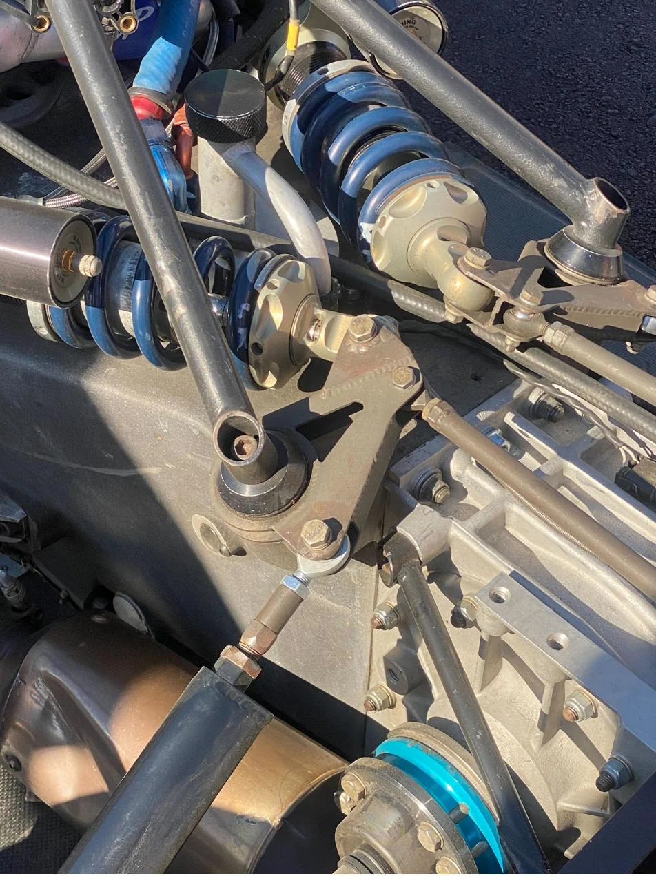
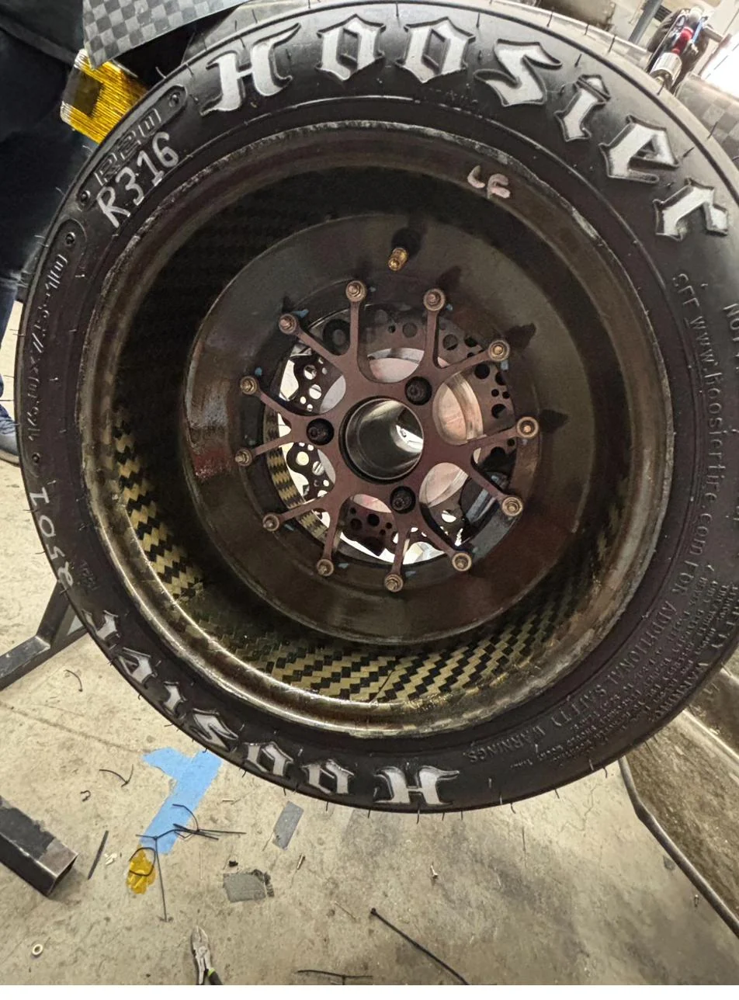
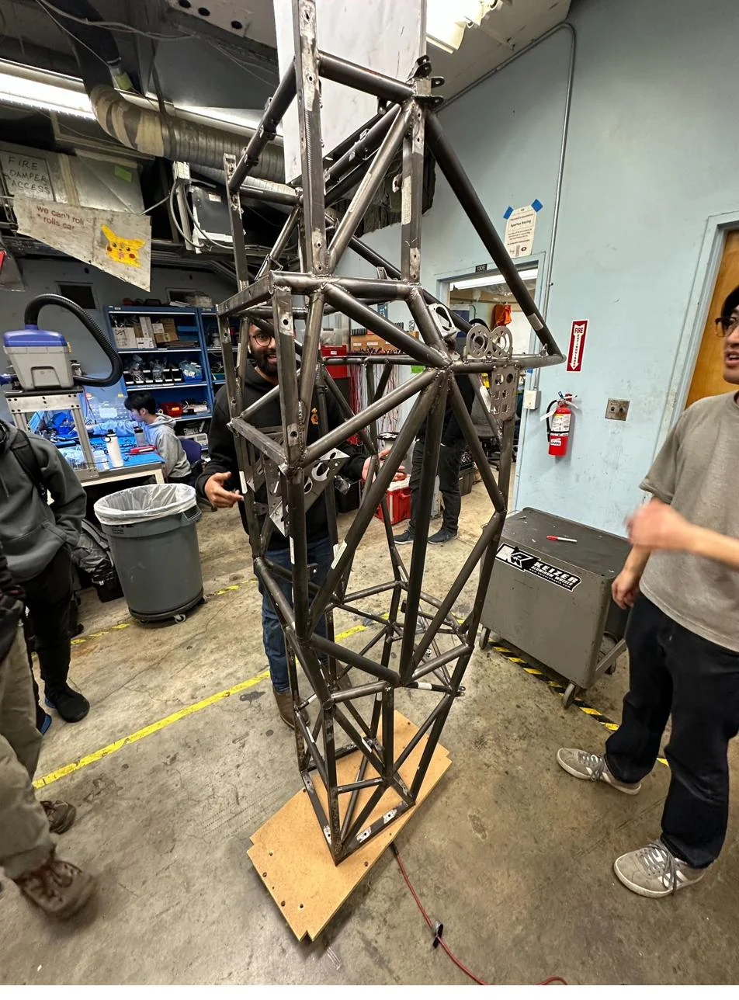

Case 06 · Automotive · Team Build
FSAE Wheel & Suspension
Hands-on Formula SAE build experience around wheel assembly, suspension-area organization, and team execution on a student-built race car.
FSAESuspensionAssemblyTeamwork

A race-car build connects many subsystems; decisions around wheels, suspension, chassis, and assembly cannot be isolated.
Team work requires technical accuracy and organized execution at the same time.
Contributed to wheel/suspension-area assembly and learned how a complex mechanical team coordinates build cycles.
Helped move subsystem work forward while gaining physical intuition for vehicle assembly and race-car packaging.
Evidence plates
Photos, CAD, and build artifacts.


